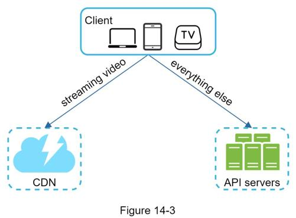
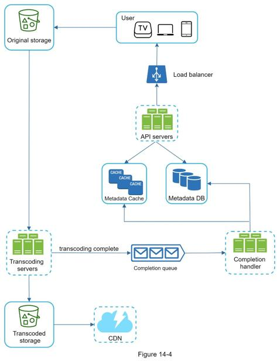
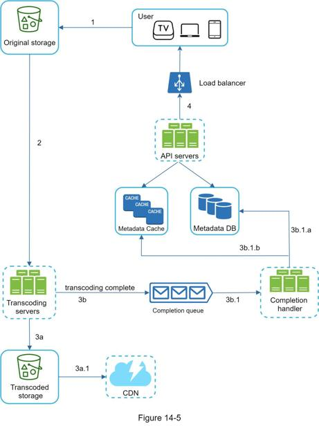
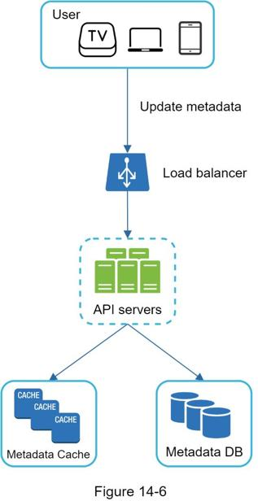
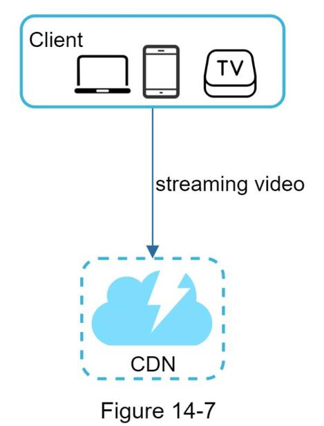

As discussed previously, the interviewer recommended leveraging existing cloud services instead of building everything from scratch. CDN and blob storage are the cloud services we will leverage. Some readers might ask why not building everything by ourselves? Reasons are listed below:
•System design interviews are not about building everything from scratch. Within the limited time frame, choosing the right technology to do a job right is more important than explaining how the technology works in detail. For instance, mentioning blob storage for storing source videos is enough for the interview. Talking about the detailed design for blob storage could be an overkill.
•Building scalable blob storage or CDN is extremely complex and costly. Even large companies like Netflix or Facebook do not build everything themselves. Netflix leverages Amazon’s cloud services [4], and Facebook uses Akamai’s CDN [5].
At the high-level, the system comprises three components (Figure 14-3).

Client: You can watch YouTube on your computer, mobile phone, and smartTV.
CDN: Videos are stored in CDN. When you press play, a video is streamed from the CDN.
API servers: Everything else except video streaming goes through API servers. This includes feed recommendation, generating video upload URL, updating metadata database and cache, user signup, etc.
In the question/answer session, the interviewer showed interests in two flows:
•Video uploading flow
•Video streaming flow
We will explore the high-level design for each of them.
Figure 14-4 shows the high-level design for the video uploading.

It consists of the following components:
•User: A user watches YouTube on devices such as a computer, mobile phone, or smart TV.
•Load balancer: A load balancer evenly distributes requests among API servers.
•API servers: All user requests go through API servers except video streaming.
•Metadata DB: Video metadata are stored in Metadata DB. It is sharded and replicated to meet performance and high availability requirements.
•Metadata cache: For better performance, video metadata and user objects are cached.
•Original storage: A blob storage system is used to store original videos. A quotation in Wikipedia regarding blob storage shows that: “A Binary Large Object (BLOB) is a collection of binary data stored as a single entity in a database management system” [6].
•Transcoding servers: Video transcoding is also called video encoding. It is the process of converting a video format to other formats (MPEG, HLS, etc), which provide the best video streams possible for different devices and bandwidth capabilities.
•Transcoded storage: It is a blob storage that stores transcoded video files.
•CDN: Videos are cached in CDN. When you click the play button, a video is streamed from the CDN.
•Completion queue: It is a message queue that stores information about video transcoding completion events.
•Completion handler: This consists of a list of workers that pull event data from the completion queue and update metadata cache and database.
Now that we understand each component individually, let us examine how the video uploading flow works. The flow is broken down into two processes running in parallel.
a. Upload the actual video.
b. Update video metadata. Metadata contains information about video URL, size, resolution, format, user info, etc.

Figure 14-5 shows how to upload the actual video. The explanation is shown below:
1. Videos are uploaded to the original storage.
2. Transcoding servers fetch videos from the original storage and start transcoding.
3. Once transcoding is complete, the following two steps are executed in parallel:
3a. Transcoded videos are sent to transcoded storage.
3b. Transcoding completion events are queued in the completion queue.
3a.1. Transcoded videos are distributed to CDN.
3b.1. Completion handler contains a bunch of workers that continuously pull event data from the queue.
3b.1.a. and 3b.1.b. Completion handler updates the metadata database and cache when video transcoding is complete.
4. API servers inform the client that the video is successfully uploaded and is ready for streaming.
While a file is being uploaded to the original storage, the client in parallel sends a request to update the video metadata as shown in Figure 14-6. The request contains video metadata, including file name, size, format, etc. API servers update the metadata cache and database.

Whenever you watch a video on YouTube, it usually starts streaming immediately and you do not wait until the whole video is downloaded. Downloading means the whole video is copied to your device, while streaming means your device continuously receives video streams from remote source videos. When you watch streaming videos, your client loads a little bit of data at a time so you can watch videos immediately and continuously.
Before we discuss video streaming flow, let us look at an important concept: streaming protocol. This is a standardized way to control data transfer for video streaming. Popular streaming protocols are:
•MPEG–DASH. MPEG stands for “Moving Picture Experts Group” and DASH stands for "Dynamic Adaptive Streaming over HTTP".
•Apple HLS. HLS stands for “HTTP Live Streaming”.
•Microsoft Smooth Streaming.
•Adobe HTTP Dynamic Streaming (HDS).
You do not need to fully understand or even remember those streaming protocol names as they are low-level details that require specific domain knowledge. The important thing here is to understand that different streaming protocols support different video encodings and playback players. When we design a video streaming service, we have to choose the right streaming protocol to support our use cases. To learn more about streaming protocols, here is an excellent article [7].
Videos are streamed from CDN directly. The edge server closest to you will deliver the video. Thus, there is very little latency. Figure 14-7 shows a high level of design for video streaming.
